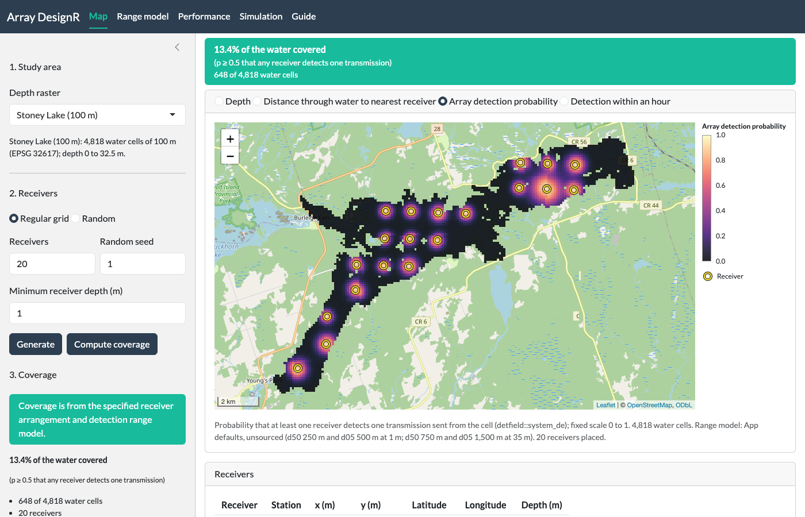
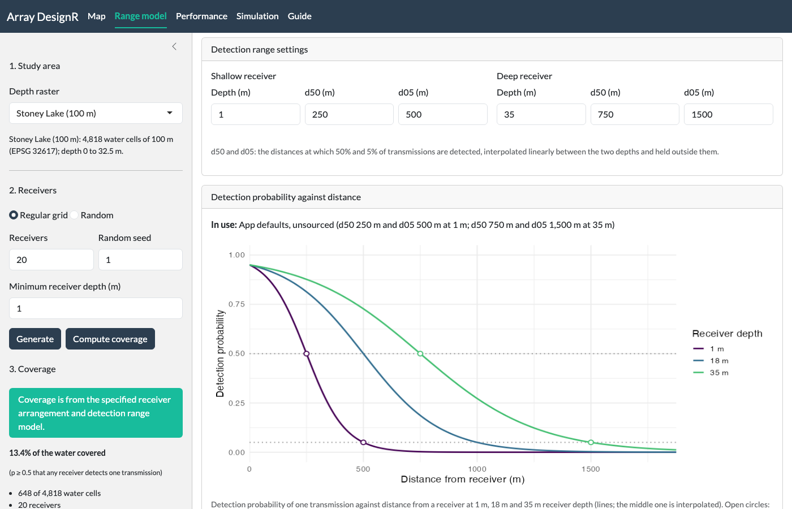
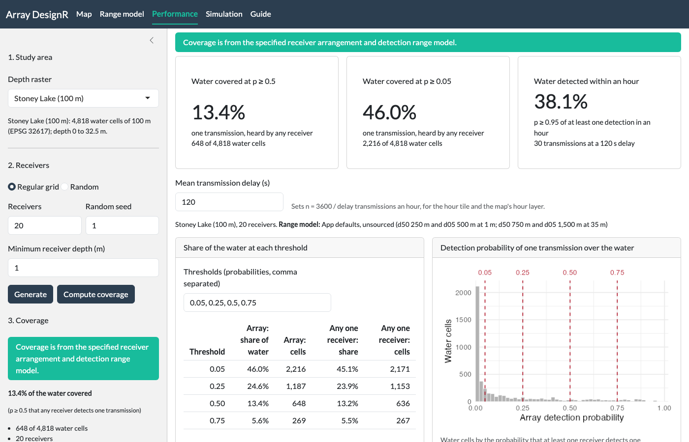
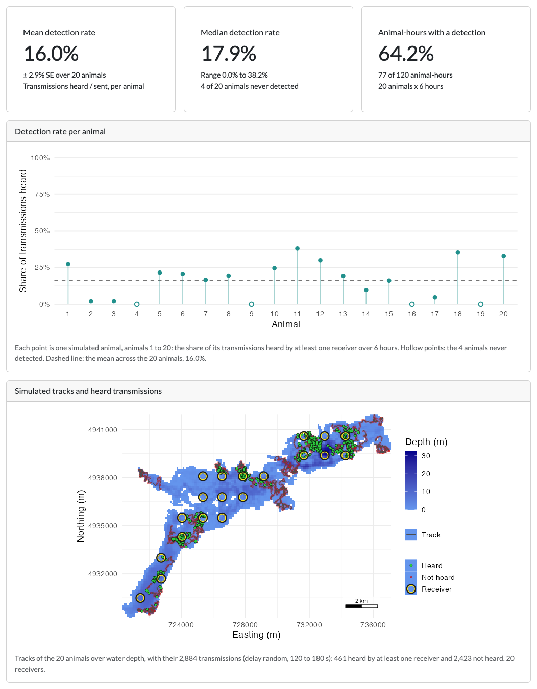

The app, tab by tab
arraydesignR.RmdarraydesignR is a point-and-click application that designs acoustic receiver arrays and tests the performance of tracking systems, for a new study or to refine an array already in the water. It maps the probability that the array detects a transmission from each water cell, reports the share of the water it covers, and simulates tagged animals to count how often they are detected. Receivers are placed by clicks on the map, on a grid, at random or from a CSV file, and the range model is typed in on its own tab. Receiver placement and the simulation come from the arraydesign R package; distances through water, detection fields and array detection probability come from the detfield R package.
The sections below follow the app on Stoney Lake at its default settings, tab by tab, with the R calls that return the numbers each tab shows. The articles of arraydesign go further in R: the article on designing an array from your own files, the article on movement models and the article on each part of a simulation.
run_app() starts the app in the browser.
# Start the app in an R session
if (interactive()) arraydesignR::run_app()1. Study area and receivers
The app opens on Stoney Lake, Ontario, with no receivers. Another water body is uploaded as a GeoTIFF of water depth with land as NA. In the sidebar you choose a regular grid or a random draw, the number of receivers, the random seed and a minimum receiver depth, then press Generate. A click on the map adds or removes one receiver, and a CSV file of receivers can be uploaded. Generate at the default settings places 20 receivers on the grid, seed 1, at least 1 m deep.
Read the depth raster the app opens on. It is a
SpatRaster of Stoney Lake with depth as zero or negative
metres and land as NA.
library(terra)
# Stoney Lake, the depth raster bundled with the app
lake <- rast(system.file("extdata", "stoney_depth.tif",
package = "arraydesignR"))
# Count the water cells, and the water cells that hold 0
sum(!is.na(values(lake)))
#> [1] 4818
sum(values(lake) == 0, na.rm = TRUE)
#> [1] 56
# Give the range of the depths (m)
range(abs(values(lake)), na.rm = TRUE)
#> [1] 0.00000 32.49542The cells are 100 m square, in UTM zone 17N (EPSG 32617).
Set water shallower than the minimum receiver depth to NA, as the app does. The cells left are the ones a receiver may occupy.
# Keep the cells at least 1 m deep
deployable <- ifel(abs(lake) >= 1, lake, NA)
# Count the cells a receiver may occupy
sum(!is.na(values(deployable)))
#> [1] 3249Place the receivers on what is left with
arraydesign::place_receivers(). It returns one row per
receiver, with its position and its depth in deploy_z. To
start from your own receiver file and compare candidate layouts, see the
article on designing an array from your own files.
# Place 20 receivers on a regular grid, seed 1
receivers <- arraydesign::place_receivers(deployable, n = 20,
method = "grid", seed = 1)
# How many receivers, and how deep they sit (m)
nrow(receivers)
#> [1] 20
range(receivers$deploy_z)
#> [1] 1.003954 24.834967The screenshot shows this layout in the app. The colour under the receivers is the coverage, which section 3 computes.

The Map tab after Generate and Compute coverage at the default settings.
2. Range model
Detection probability falls with distance on a logistic curve through
0.5 at d50 and 0.05 at d05. On the Range model tab you set d50 and d05
at a shallow and a deep receiver depth, and both are interpolated
linearly by each receiver’s depth and held constant outside the two
depths. The app defaults, which the next chunk sets, come from no range
test; replace them with the d50 and d05 of your own. In R, a model
fitted to a range test, varying with depth and date, goes in through
detfield::de_model() (see the article
on range models of detfield).
Build the default curve with detfield::de_logistic(). It
returns a detection model.
# The app defaults: d50 and d05 at a 1 m and a 35 m receiver
curve <- detfield::de_logistic(d50 = c(250, 750), d05 = c(500, 1500),
depth = c(1, 35))
curve
#> <de_model> de_logistic, d50 250/750 m, d05 500/1500 m, depths 1/35 m
#> reads: distance_m, depth_m
#> sigma: station_hour not given
#> blocked line of sight: curve read at the distance through waterRead the curve at 0 m, d50 and d05 for a receiver 1 m deep.
curve$predict returns the logit, and plogis()
turns it into a probability.
# Detection probability at 0, 250 and 500 m from a 1 m receiver
plogis(curve$predict(c(0, 250, 500), depth_m = 1))
#> [1] 0.95 0.50 0.05Because d05 is twice d50, detection at 0 m is 0.95. The closer d05 is to d50, the nearer the curve starts to 1.
The app leaves out cells farther from every receiver than the distance at which the curve falls below 0.001, read at the deeper receiver depth, 35 m.
# The first whole metre at which a 35 m receiver detects with p < 0.001
distance_m <- 0:5000
p_deep <- plogis(curve$predict(distance_m, depth_m = 35))
cutoff_m <- min(distance_m[p_deep < 0.001])
cutoff_m
#> [1] 2510
The Range model tab at the defaults. Open circles mark d50 and d05 on the curves of the two set depths.
3. Coverage and the map layers
Compute coverage, in the sidebar of the Map tab, gives for every water cell the probability that at least one receiver detects one transmission. It is drawn on the Map tab, in the screenshot of section 1. This is the coverage of Pedersen et al. (2014, Methods in Ecology and Evolution 5: 1043-1051, https://doi.org/10.1111/2041-210X.12255). The map has four layers: depth, distance through water to the nearest receiver, array detection probability, and detection within an hour (section 4).
Measure the distance through water from each receiver to each water
cell, up to the cutoff. detfield::water_distances() returns
one row per receiver-cell pair within it.
# Distances through water from the 20 receivers, up to the cutoff
distances <- detfield::water_distances(
lake, receivers[c("station_id", "x", "y", "deploy_z")],
max_distance = cutoff_m
)
nrow(distances)
#> [1] 21093Read the curve at each distance with
detfield::de_field(). It returns the detection probability
of each receiver at each cell, and warns where land lies on the straight
line between a receiver and a cell.
# Detection probability of each receiver at each cell
field <- detfield::de_field(distances, curve)
#> 52 of 2,304 receiver-cell pairs with p >= 0.05 have land on the
#> straight line between them; with blocked = 0 the curve is read on
#> them as if the line were clear. See `blocked` in ?de_model.The app keeps the default, blocked = 0, so behind
islands and points of land the map overstates detection. In R, a
negative blocked value in detfield::de_model()
lowers detection on those pairs.
Combine the receivers with detfield::system_de(). It
needs the days each receiver listened; one day for all 20 gives the
coverage of the layout.
# One listening day for every receiver in the field
listening <- data.frame(station_id = field$receivers,
date = as.Date("2000-01-01"))
# Probability that at least one receiver detects one transmission, per cell
coverage <- detfield::system_de(field, listening)$p
length(coverage)
#> [1] 4818Count the water cells at a probability of 0.5 or more, the share the Map tab’s banner reports.
4. Performance
The Performance tab reads the last coverage result, so press Compute coverage again after a change to the layout or the range model. The share at 0.5 above is its first tile; the next two chunks give the other two.
Count the water cells at 0.05 or more.
# Cells and share of the water at p >= 0.05
sum(coverage >= 0.05)
#> [1] 2216
mean(coverage >= 0.05)
#> [1] 0.4599419The hourly probability is p_hour = 1 - (1 - p)^n, with n = 3600 / delay transmissions an hour at the mean transmission delay set on the tab (120 s to start, so n = 30). It assumes that successive transmissions are detected independently; where detection is clustered in time, p_hour overstates the chance of a detection.
# Probability of at least one detection in an hour, 30 transmissions
p_hour <- 1 - (1 - coverage)^(3600 / 120)
# Cells and share of the water at p_hour >= 0.95
sum(p_hour >= 0.95)
#> [1] 1837
mean(p_hour >= 0.95)
#> [1] 0.3812785arraydesign::coverage_summary() counts the cells where a
single receiver reaches each threshold on its own. It returns one row
per threshold.
# Cells reached by the best single receiver at 0.05 and 0.5
single_receiver <- arraydesign::coverage_summary(field,
thresholds = c(0.05, 0.5))
single_receiver
#> threshold n_cells n_water_cells share n_receivers
#> 1 0.05 2171 4818 0.4506019 20
#> 2 0.50 636 4818 0.1320050 20These are the “Any one receiver” columns of the tab’s table, at 0.05 and 0.5.

The Performance tab after Compute coverage at the default settings.
5. Simulation
The Simulation tab walks animals through the water on a correlated random walk, sends their transmissions at a random delay between a shortest and a longest delay, and each receiver hears each transmission, or not, under the range model. The detection rate of an animal is the share of its transmissions heard by at least one receiver.
Set the movement model with arraydesign::crw_model().
The values are the app’s starting ones; no species was measured for
them. To set a walk for your species, see the
article on movement models.
# Correlated random walk: mean step 30 m (SD 15 m) per 60 s, turning SD 40
walk <- arraydesign::crw_model(step_mean = 30, step_sd = 15, turn_sd = 40,
time_step_s = 60)
walk
#> <movement_model> 1 state
#> time step: 60 s
#> source: crw_model(): gamma steps, mean 30 m and sd 15 m per 60 s; wrapped
#> normal turns, sd 40 degreesWalk 20 animals for 6 hours on the lake with
arraydesign::simulate_tracks(). It returns one row per
animal per time step.
# 20 animals, 360 steps of 60 s each, seed 1
tracks <- arraydesign::simulate_tracks(lake, walk, n_animals = 20,
n_steps = 6 * 3600 / 60, seed = 1)
nrow(tracks)
#> [1] 7220Send transmissions along each track at a delay drawn between 120 and
180 s. arraydesign::simulate_transmissions() returns one
row per transmission.
# Transmissions at a random delay of 120 to 180 s, seed 1
transmissions <- arraydesign::simulate_transmissions(
tracks, tag_delay = c(120, 180), seed = 1
)
nrow(transmissions)
#> [1] 2884Build a detection field over the whole lake. It is the field of section 3 with no cutoff, because an animal can be anywhere on the lake.
# Distances through water from the 20 receivers to every water cell
distances_lake <- detfield::water_distances(
lake, receivers[c("station_id", "x", "y", "deploy_z")]
)
# Detection probability of each receiver at every water cell
field_lake <- detfield::de_field(distances_lake, curve)
#> 52 of 2,304 receiver-cell pairs with p >= 0.05 have land on the
#> straight line between them; with blocked = 0 the curve is read on
#> them as if the line were clear. See `blocked` in ?de_model.Detect each transmission under the curve with
arraydesign::simulate_detections(). It returns the number
of receivers that heard each transmission. The
article on each part of a simulation shows every table between
tracks and detections.
# Detect each transmission, with no extra variation between receivers
detections <- arraydesign::simulate_detections(
transmissions, field_lake, overdispersion = "none", seed = 1
)
# Transmissions heard by at least one receiver
heard <- detections$transmissions$n_detections > 0
sum(heard)
#> [1] 461Summarise the detection rate across animals.
# Share of each animal's transmissions heard
detection_rate <- tapply(heard, transmissions$path_id, mean)
# Mean, SE, median and range of the rate across animals (%)
round(100 * c(mean = mean(detection_rate),
se = sd(detection_rate) / sqrt(length(detection_rate)),
median = median(detection_rate),
min = min(detection_rate), max = max(detection_rate)), 1)
#> mean se median min max
#> 16.0 2.9 17.9 0.0 38.2
# Animals never detected
sum(detection_rate == 0)
#> [1] 4Count the animal-hours with at least one detection.
# Hour of the walk, 0 to 5, of each transmission; the last second counts
# in hour 5, as in the app
walk_start <- as.POSIXct("2025-01-01", tz = "UTC")
hours_in <- as.numeric(difftime(transmissions$datetime, walk_start,
units = "hours"))
hour_of_walk <- pmin(5, floor(hours_in))
# Whether each animal was heard in each hour
heard_by_hour <- tapply(heard, list(transmissions$path_id, hour_of_walk),
any)
sum(heard_by_hour, na.rm = TRUE)
#> [1] 77The chunks above print the numbers on the tiles of the Simulation tab below. The rates depend on the movement model and the range model, so use them to compare layouts on the same settings.

The Simulation tab after one run at the default settings, 20 animals for 6 hours, seed 1.